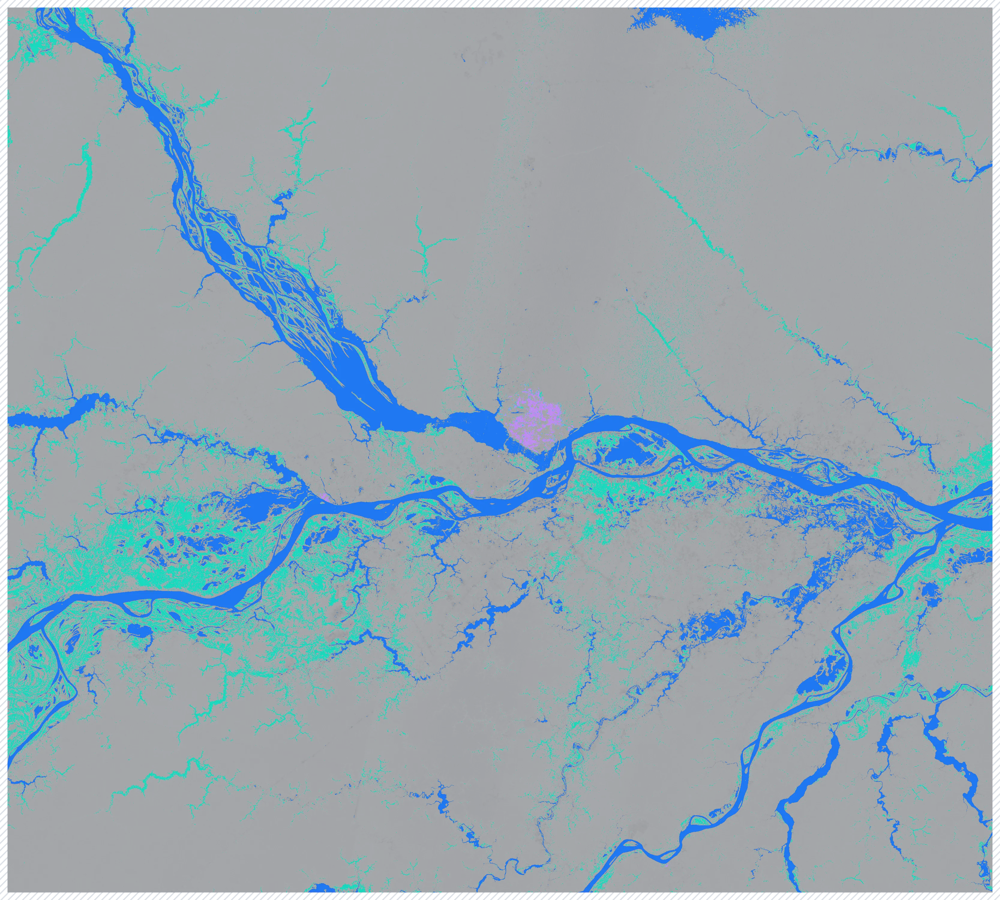
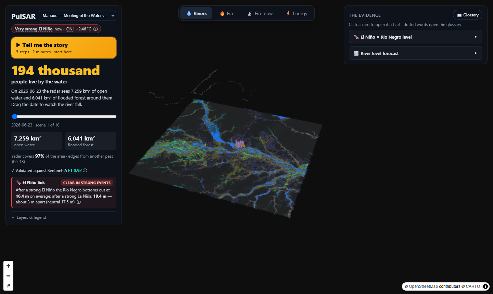
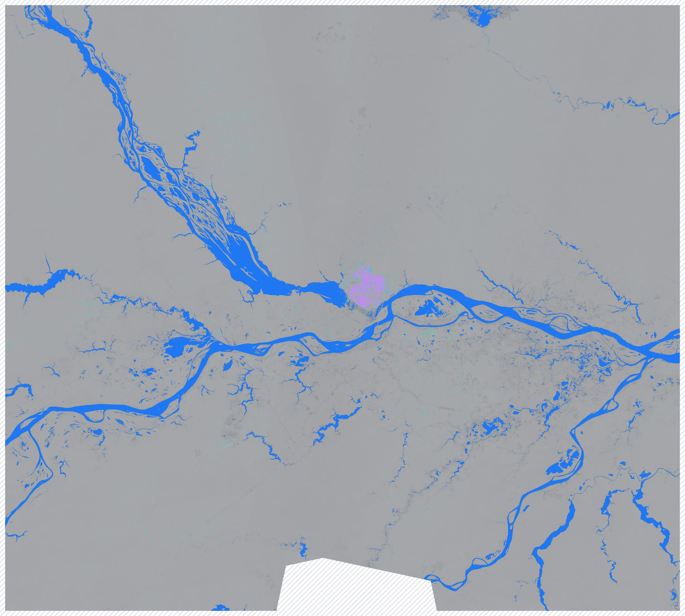

In Tupi, ara means time, weather and world.
When the river falls, millions are cut off.
NISAR sees it first — through clouds, smoke and canopy.
Team Ara
Ricardo Ramos · Giovana Assis Cavalca · Felipe Ribeiro Tanso · Giulianna Assis Cavalca
🌐 ricardo-ramos1.github.io/ARA-amazonia
💻 github.com/ricardo-ramos1/ARA-amazonia
ANA river gauge; axis starts at 10 m. Three years earlier, the biggest flood ever: 30.0 m (2021).

NISAR's L-band radar sees water under the forest canopy, in any weather. Ara turns it into one map that answers who is affected:
▶ 5-step guided story · click any km² to see who lives there · plain-language glossary · works on phones
Machine learning forecasts the river 3 months ahead: skill +0.25 over the historical average, beating persistence. Python · deck.gl · MapLibre · open source.

~3 m apart · 76 years (1951–2026)
Honest by design: every El Niño claim carries an evidence label — strong, clear in strong events or indirect.
Who it is for
🚨 Civil defense🩺 Health agents🚒 Fire brigades ⚡ Energy planners🛶 Riverside communities🔬 Researchers 🏫 Schools & media“When the river speaks,
we listen — from space.”
🌐 ricardo-ramos1.github.io/ARA-amazonia
💻 github.com/ricardo-ramos1/ARA-amazonia
Team Ara · NASA Space Apps 2026
Ricardo Ramos · Giovana Assis Cavalca · Felipe Ribeiro Tanso · Giulianna Assis Cavalca